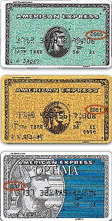

מה זה CVV – ספרות ביקורת לכרטיס אשראי
CVV הנן ראשי התיבות באנגלית של ספרות בקורת לכרטיס אשראי. לחברות האשראי ויזה, מאסטר קרד ואמריקן אקספרס יש גירסאות שונות של CVV על מנת להקטין את הסיכון להונאת חברות האשראי בעסקאות ללא שימוש בכרטיס אשראי עצמו, (כמו למשל באמצעות האינטרנט, הטלפון או הדואר). קוד הCVV מאמת שמבצע ההזמנה אכן נמצא בסמוך לכרטיס האשראי בפועל, כדי להשתמש בקוד.
איפה ניתן למצוא את הקוד?
ויזה ודיינרס- CVV2-קוד בן 3 ספרות
CVV2 (מנגנון לאימות ספרות ביקורת, מנגנון סינון נוסף שמפעיות חברות האשראי בו על הלקוח להזין במעמד הקניה את שלושת ספרות הביקורת אשר מוטבעות על גב הכרטיס), של חברת ויזה הוא שלושת הספרות האחרונות אחרי מספר כרטיס האשראי על גב הכרטיס באזור החתימה.
מאסטר קארד- CVC2 – קוד בין 3 ספרות
CVC2 של חברת מאסטר קרד הוא שלושת הספרות האחרונות אחרי מספר כרטיס האשראי על גב הכרטיס באזור החתימה.

CID – ספרות הזיהוי של חברת אמריקן אקספרס מוטבעות על פני הכרטיס מעל ומימין למספר הכרטיס.

מה הכרטיס שלי אם אינו מופיע ברשימה הנ"ל?
CVV נמצא כרגע רק בשימוש ויזה, מאסטר קרד ואמריקן אקספרס.